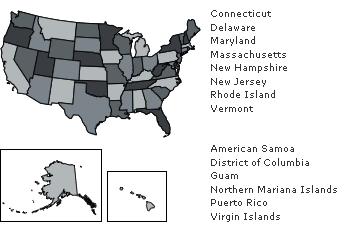

Find Your Representative
Your member's website and contact form are available around the clock. Identify your member and let your opinion be heard.
Legislative Activity
| Time | Session |
|---|---|
| 9:10 P.M. - | The House adjourned. The next meeting is scheduled for 10:00 a.m. on May 15, 2013. |
| 9:10 P.M. - | On motion to adjourn Agreed to by voice vote. |
| 9:10 P.M. - | Mr. Garamendi moved that the House do now adjourn. |
| 7:27 P.M. - | SPECIAL ORDER SPEECHES - The House has concluded all anticipated legislative business and has proceeded to Special Order speeches. |
| 7:09 P.M. - | ONE MINUTE SPEECHES - The House proceeded with further one minute speeches. |
| View the full Floor Proceedings from the Clerk of the House | |
Most Recent Votes
| Roll | Date | Bill | Result | Title/Description |
|---|---|---|---|---|
| 146 | 05-14 | S CON RES 10 | Passed | Authorizing the use of Emancipation Hall in the Capitol Visitor Center for an event to celebrate the birthday of King Kamehameha |
| 145 | 05-14 | H R 1580 | Passed | To affirm the policy of the United States regarding Internet governance |
| 144 | 05-14 | H R 180 | Passed | National Blue Alert Act |
| 143 | 05-09 | JOURNAL | Passed | National Blue Alert Act |
| 142 | 05-09 | H R 807 | Passed | To require that the Government prioritize all obligations on the debt held by the public in the event that the debt limit is reached |
House Overview
Elected to a two-year term, each representative serves the people of a specific congressional district by introducing bills and serving on committees, among other duties.
View Representatives by State

Find Your Representative
Elected by their peers, certain representatives hold positions that combine institutional, administrative and partisan roles.
Speaker of the House: Rep. John Boehner
Elected by the whole of the House of Representatives, the Speaker acts as leader of the House and combines several institutional and administrative roles.
Republican Leadership
Majority Leader
Rep. Eric Cantor
Majority Whip
Rep. Kevin McCarthy
Conference Chairman
Rep. Cathy McMorris Rodgers
Policy Committee Chairman
Rep. James Lankford
Democratic Leadership
Democratic Leader
Rep. Nancy Pelosi
Democratic Whip
Rep. Steny Hoyer
Assistant Democratic Leader
Rep. James Clyburn
Democratic Caucus
Rep. Xavier Becerra
-
Chaplain of the House
Patrick J. Conroy
-
Chief Administrative Officer
Dan Strodel
-
Clerk of the House
Karen Haas
-
Sergeant at Arms
Paul D. Irving
-
Historian of the House
Matthew Wasniewski
-
Inspector General
Theresa Grafenstine
-
Office of Congressional Ethics
Porter J. Goss, Chairman
-
Parliamentarian of the House
Thomas J. Wickham, Jr.
Public Disclosure
Financial Disclosure Reports
Information about the source, type, amount, or value of the incomes of representatives, officers, and candidates.
Foreign Travel Reports
Information about certain expenditures for all official foreign travel by representatives and staff.
Gifts and Travel Filings
Information about travel-related expenses incurred by representatives who are reimbursed by nongovernment sources.
Legal Expense Fund Disclosures
Information about any legal expenses incurred by a candidate or current representative.
Statement of Disbursements
Information about all receipts and expenditures of representatives, committees, leadership, and officers of the House.